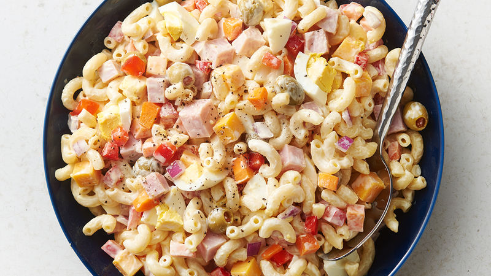

Pasta Salad Recipe

A recipe inspired by a great many variations of this classical dish, with a hint of Puerto Rican flavor from all my childhood thanksgivings. I know you will adore this dish. Let us begin!
Ingredients:
Macaroni Pasta (whole box ~450g dry)
Mayonnaise
Greek Yogurt (No added sugar)
Jumbo Eggs (2x)
Red Onions
Green Onions/Scallions
Parsley Herbs
Bell Pepper (Green or Red)
Chopped Ham
Pimientos
Salt
Sugar
Extra Virgin Olive Oil
Black Pepper
Paprika
STEPS:
Boil 2 eggs to perfection for about 15 minutes
Chop all vegetables:
1/2 Cup Bell Pepper
1/2 Cup Red Onions
1/2 Cup Scallions
1/4 Cup Parsley
1/4 Cup Pimientos
Place eggs in ice water and peel
Create Sauce:
1 Cup of Mayonnaise
1 Cup of Greek Yogurt
1/4 tsp of Salt
1/2 tsp of Black Pepper
1/4 tsp of Sugar
1 Tbsp of Olive Oil
Pinch of Paprika
Stir sauce... Add chopped veggies... Stir thoroughly
Cook pasta until al dente. Add handful of salt for flavor
Once pasta is cooked and drained, mix into sauce
Leave in refrigerator for 3 hours
Add 1/2 Cup of extra Mayonnaise/Yogurt to compensate for absorbtion
Serve!!!
Return Home Spaghetii Carbonara Spaghetti Aglio e Olio